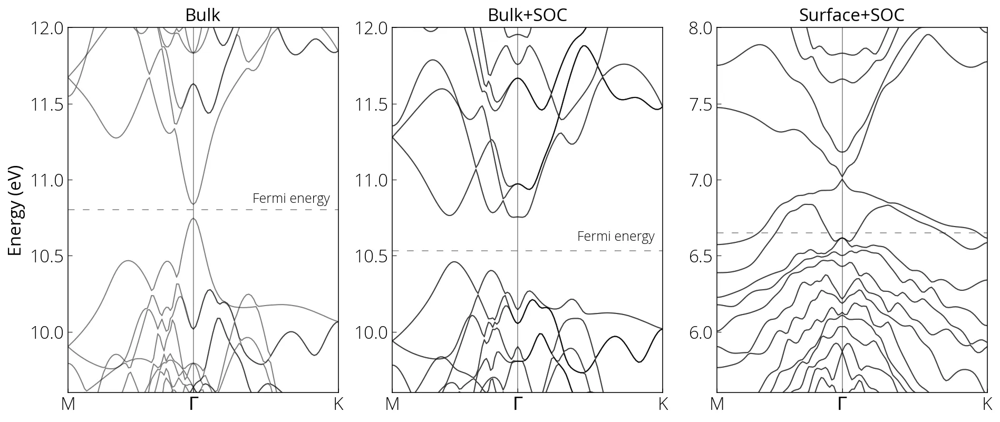
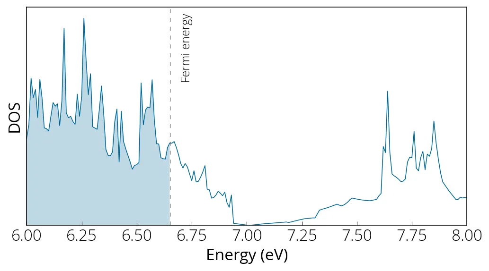

Bi₂Se₃ (isolante topológico)
Topological insulators are a special class of material that is insulating in the bulk, however exhibit conducting states in the surface. Bi2Se3 is such a material. Spin orbit coupling and breaking of the inversion symmetry at the surface of the crystal is crucial to the existence of the Dirac surface state. Here we will calculate the bandstructure step by step: first for the bulk, next including SOC, and finally for the slab. Please check the respective input files. I followed the following steps:
# SCF calculation for bulk
mpirun -np 24 pw.x -i pw.scf.bi2se3_01.in > pw.scf.bi2se3_01.out
# bands calculation for bulk
mpirun -np 24 pw.x -i pw.bands.bi2se3_01.in > pw.bands.bi2se3_01.out
# post processing for bulk bands
mpirun -np 24 bands.x -i pp.bands.bi2se3_01.in > pp.bands.bi2se3_01.out
# for bulk with SOC
mpirun -np 24 pw.x -i pw.scf.bi2se3_02.in > pw.scf.bi2se3_02.out
mpirun -np 24 pw.x -i pw.bands.bi2se3_02.in > pw.bands.bi2se3_02.out
mpirun -np 24 bands.x -i pp.bands.bi2se3_02.in > pp.bands.bi2se3_02.out
# slab calculation
mpirun -np 24 pw.x -i pw.scf.bi2se3_03.in > pw.scf.bi2se3_03.out
mpirun -np 24 pw.x -i pw.bands.bi2se3_03.in > pw.bands.bi2se3_03.out
mpirun -np 24 bands.x -i pp.bands.bi2se3_03.in > pp.bands.bi2se3_03.out
# DOS
mpirun -np 24 pw.x -i pw.nscf.bi2se3_04.in > pw.nscf.bi2se3_04.out
mpirun -np 24 dos.x -i pp.dos.bi2se3_04.in > pp.dos.bi2se3_04.outFor the slab calculation the periodicity of the lattice was broken along the
c-axis to artificially add 10 Å vacuum. In above calculation electronic spin
was not considered (meaning the states are degenerate with spin up and down).
If starting_magnetization is set to zero (or not given) the code makes a
spin-orbit calculation without spin magnetization. It assumes that time reversal
symmetry holds and it does not calculate the magnetization. The states are
still two-component spinors but the total magnetization is zero.

Notice that for the Dirac surface states the gap did not completely close at the Fermi energy. This is possibly due to finite size effect. We could repeat the calculation with larger vacuum, and see what happens. Also the Fermi energy estimation seems incorrect.
In order to sample the \(\Gamma\) point for our DOS calculation, an odd k-grid mesh (25✕25✕5) was used. The signature of Dirac cone is evident from the DOS figure.

Resources
Conteúdo adaptado de Bandstructure of topological insulating Bi2Se3, do Quantum Espresso Tutorial de Pranab Das, sob licença CC BY 4.0. Alterações: layout, título e navegação traduzidos para o português.